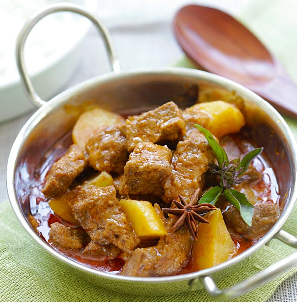

Home

Seriously too good to make light of. Try it, you'll see.
Delicious Thai Beef Stew with a really creamy base full of wonderful flavors
Ingredients
- High Smoke Point Oil
- 1 Can of Coconut Milk
- 1 tbsp Curry Paste
- 1 Cinnamon Stick
- 3 Green or 2 black Cardamom Pods
- 1 Star Anise Pod
- 2 tbsp Brown Sugar
- 2 Tbsp Fish Sauce
- 1.5 Lbs Beef Chuck
- 1 Cup Water
- 2 Cups Brown Rice
- 1 lb Yukon Gold Potatoes
- 1/4 of roasted peanuts
Straightforward, whole lot of waiting.
- Start rice, in cooker or by direction on box
- Add 2 tbsp Oil to Dutch Oven/Large pot on med-high heat until shimmering
- Add 1/2 cup from Can of Coconut milk, 1/4 cup Curry Paste, fry for 3-4 minutes
- While frying, cut up potatoes into 1-inch cubes
- Add rest of Can of Coconut Milk, 1 Cup of water.
- Mix together Coconut milk and paste. Add Cardamom Pods, Star Anise, Cinnamon Sticks, Brown Sugar, and Fish
Sauce.
- Add Beef
- Simmer on med for 45 Minutes
- Remove Cardamom Pods, Star Anise, and cinnamon. This is very important, leaving them in can ruin the taste and
texture.
- Add potatoes. Simmer for 20 minutes.
- Remove from heat. Add peanuts
Back to Top